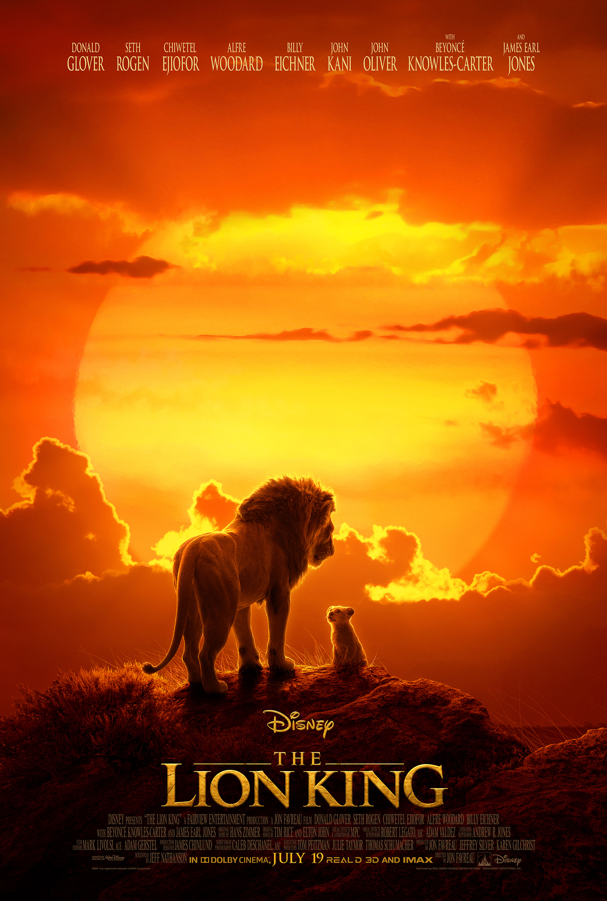
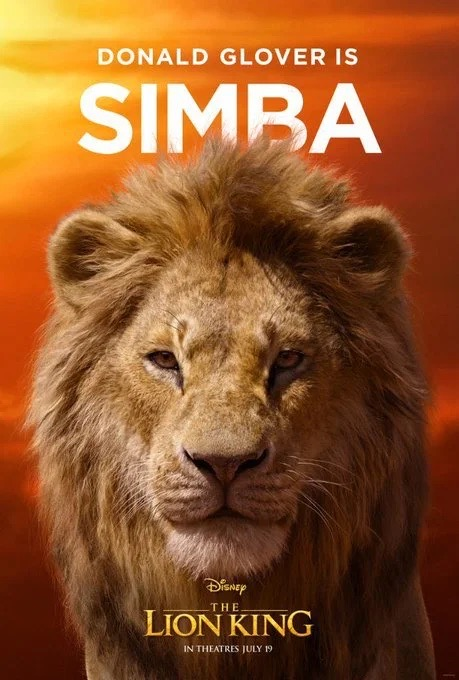
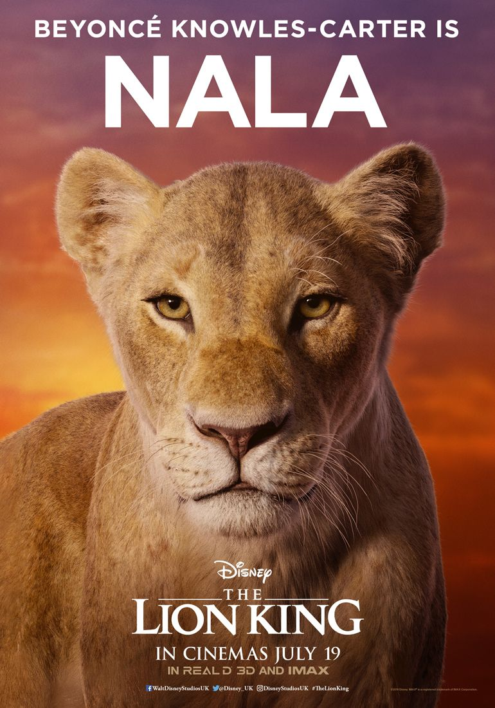
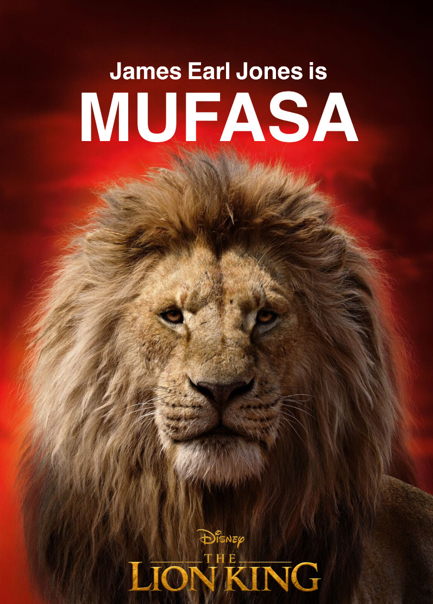
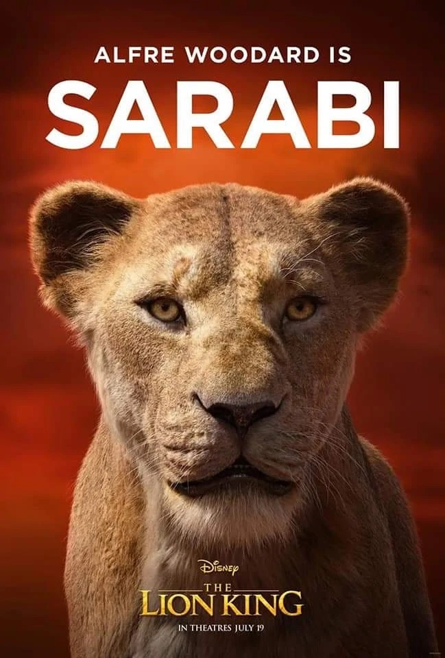
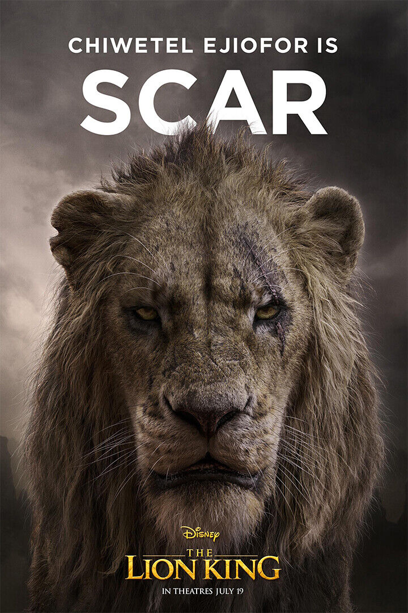
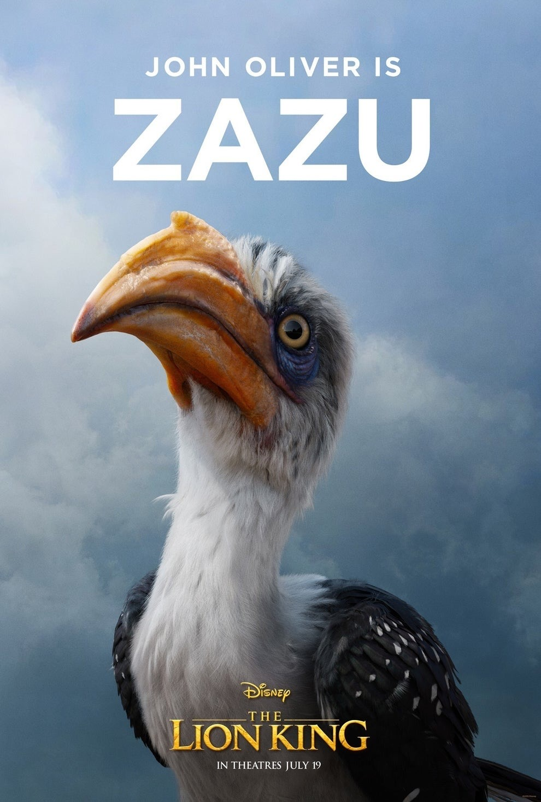
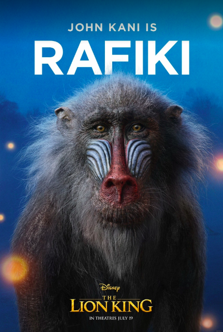
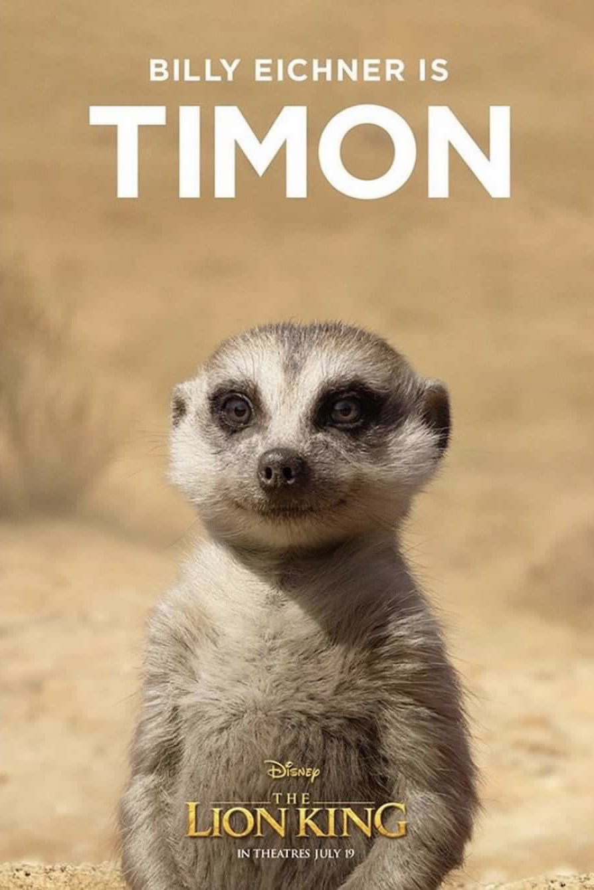
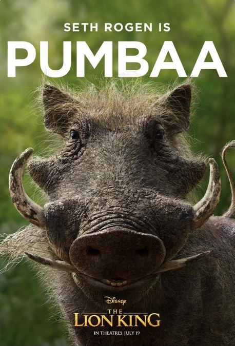

LION KING

Plot: Simba idolises his father,
King Mufasa, and takes to heart his own royal destiny
on the plains of Africa. But not everyone in the kingdom
celebrates the new cub's arrival. Scar, Mufasa's brother
-- and former heir to the throne -- has plans of his own.
The battle for Pride Rock is soon ravaged with betrayal,
tragedy and drama, ultimately resulting in Simba's exile.
Now, with help from a curious pair of newfound friends,
Simba must figure out how to grow up and take back
what is rightfully his.
Simba

Simba is the protagonist of
the story. He is an adventurous and energetic cub
who is destined to become King of the Pridelands
after his father’s death.But he finds himself involved
in an accident, plotted by his uncle Scar, and his
father Mufasa dies. Simba has to run away from his
land to avoid being blamed for the death of the King.
Nala

Nala is Simba’s best friend.
She is an enthusiastic,playful and energetic lion cub.
When she grows up she understands the cruelty of
life when Scar became King and believes that Simba
is still alive. So she starts looking for Simba and is
determined to fight for the benefit of the Reign so
that the animals can return to a peaceful life.
Mufasa

Mufasa is a huge powerful lion.
He is the KIng of Prideland. Father of Simba and mate
of Sarabi. He is a wise and fair ruler who follows the
“The Circle of Life” He is the eldest brother of Scar who
plots against him in order to become King.
After the birth of Simba Mufasa dedicates himself to
training his son to become King and to respect the
Circle of Life and to take responsibility for the Kingdom
and subjects. The subjects love Mufasa as he is a fair
ruler and his Kingdom is mighty and his land is prosperous.
Sarabi

Sarabi is a female lion. She is
the queen of Pride Rock who preceded Nala. She was
the mate of Mufasa, with whom she had a son, Simba.
During Mufasa's reign, Sarabi served as his queen and
the leader of his hunting party. However, when Mufasa
and Simba purportedly died in a wildebeest stampede,
she was forced to serve Mufasa's younger brother, Scar,
instead. Over the seasons, Scar's hyena minions took
over the Pride Lands, and the kingdom suffered a famine
as a result.
Scar

Scar is a fictional character
and the main antagonist in Disney's The Lion King
franchise. He was created by screenwriters Irene
Mecchi, Jonathan Roberts, and Linda Woolverton,
and animated by Andreas Deja. Scar is introduced
in the first film as the ruthless, power-hungry younger
brother of Mufasa, ruler of the Pride Lands. Originally
first-in-line to Mufasa's throne until he is suddenly
replaced by Mufasa's son Simba.
Zazu

Zazu is a major character in
Disney's 2019, The Lion King. He is an uptight, red-billed
hornbill that served as Butler and royal advisor to the
Pride Lands monarchy. Zazu is charged with upholding
order within the kingdom, though he is rarely taken
seriously due to his diminutive size and fragile temper.
Rafiki

Rafiki is a male mandrill.
He currently serves as the Royal Mjuzi of the Pride
Lands. Rafiki presents Simba, the prince heir of
Pride Rock, to the animals of the Pride Lands. Later,
when Scar assumed the throne, Rafiki grieved
the purported deaths of Simba and his father, Mufasa.
Timon

Timon is the best friend
of Pumbaa, the friend and guardian (when he was a
cub) of Simba, the son of Ma, and the nephew of
Uncle Max. Inspired by the idea of having a major
predator on their side in The Lion King, he and
Pumbaa took Simba in when he collapsed of heat
exhaustion and guilt after his father's death.
Pumbaa

When young Simba fled
his homeland, Pumbaa and his best friend, Timon,
took the cub in and taught him to adopt a "Hakuna
Matata" lifestyle. Seasons later, Simba's childhood
friend Nala found him in the jungle and implored
him to return home and reclaim his birthright.
Simba did so, and Timon and Pumbaa assisted
him in the battle against Scar and his hyena army.
After Simba and his allies emerged victorious,
Timon and Pumbaa witnessed him ascend Pride
Rock and take his place as the rightful king of the
Pride Lands.